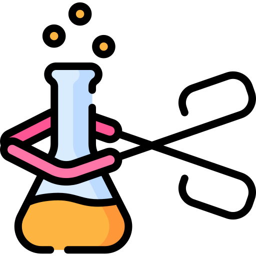
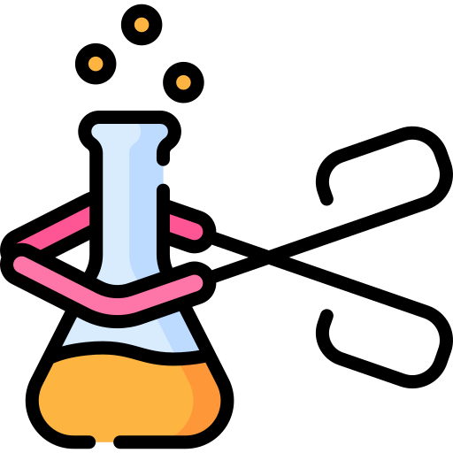

Momentum in the beauty realm depends upon constant innovation coupled with consumer faith in its products. Strategic scientific testing stands as the bedrock foundation for producing safe effective products which meet both regulatory requirements. The technology-rich laboratory transforms novel cosmetic formulas into market-ready products for Dermatological testing for the UK by applying analytical skills combined with thorough safety certifications alongside rigorous quality evaluation practices. The technical information combined with direct recommendations drives manufacturers to launch their products with complete market readiness.

The competitive beauty market today relies fundamentally on scientific proof which determines product achievement. We measure products according to scientific methodologies and advanced technological frameworks to meet all requirements of cosmetic manufacturers and their end users.
- Advanced Safety Screening: We use sophisticated analytical techniques to detect and quantify potential hazards, such as trace contaminants, harmful chemicals, and allergens. This ensures complete consumer protection and compliance with safety standards. Our modern instruments empower product claims verification through empirical testing that evaluates UV protection properties along with moisture management properties. The advanced measurement instruments we utilise strengthen manufacturing claims by providing data that boosts brand confidence.
- Quality Assurance: The systematic protocols we use analyze how products maintain stability while ensuring product consistency and shelf life across different environmental conditions. Our systematic protocols ensure durable high-quality products for diverse markets.
- Regulatory Excellence: We help clients navigate complex global compliance requirements, ensuring products meet or exceed standards in their target regions.
We help manufacturers and brands create safe high-quality products which fulfill consumer requirements while satisfying regulatory specifications through our cosmetic testing services.
Our laboratory adheres to the strictest international and European regulatory frameworks to ensure product safety, quality, and market compliance. Some of the key standards and guidelines we follow include:
- EU Cosmetics Regulation (EC 1223/2009): The European regulation establishes extensive safety criteria that must be met by all cosmetic products which wish to access the European marketplace.
- ISO 22716 - Good Manufacturing Practices (GMP): Our company uses systematic quality control methods that produce dependable and consistent testing processes.
- UK Cosmetic Products Enforcement Regulations 2013: Our processes follow guidelines established by both the Medicines and Healthcare products Regulatory Agency (MHRA) and the Office for Product Safety and Standards (OPSS).
- Stability Testing Protocols: The international standards guide how we test aged products by performing stability trials under real-time (25°C ± 2°C) and accelerated (40°C ± 2°C) controlled conditions.
- Microbiological and Risk Assessment Standards: Our chemical and microbiological tests follow the latest ISO standards ISO 21148:2017 and ISO 29621:2017 for safety purposes and risk mitigation.
Our laboratory testing methods meet advanced industry standards for Dermatological testing UK through partnerships with industry associations including the Cosmetic Toiletry and Perfumery Association (CTPA). Testing methodologies based at our laboratory enable products to reach higher than international reference safety quality performance metrics.
Our customised testing solutions specifically for Dermatological testing UK alongside other industry sectors help businesses reach their goals and protect consumer trust.
- Cosmetic Manufacturers: Supporting product development, formulation validation and quality control.
- Retail and E-Commerce Brands: Our company helps businesses navigate product market entry through executing compliance tests of their products.
- Pharmaceutical and Cosmeceutical Companies: The company verifies medicated cosmetics for safe effectiveness.
- Natural and Organic Product Brands: Example-Testing ingredient authenticity and clean formulations that meet eco-conscious lifestyle standards.
- Regulatory Agencies: Our organization performs both product safety verifications and compliance evaluations.
- Face Care: Cleansers, moisturisers, toners, exfoliators, face masks, and oils.
- Body Care: Lotions, body washes, scrubs, and body oils.
- Shampoos and Conditioners: Formulated for various hair types and concerns.
- Hair Treatments: Serums, scalp treatments, heat protectants, and more.
- Styling Products: Gels, mousses, and sprays.
- Face Makeup: Foundations, concealers, powders, blushes, highlighters, and primers.
- Eye Makeup: Eyeshadows, eyeliners, mascaras, and brow products.
- Lip Makeup: Lipsticks, glosses, liners, and balms.
- Sunscreens, after-sun care, self-tanners, and tanning oils.
- Perfumes, body mists, deodorants, nail polishes, and nail care products.
- Shaving creams, beard oils, skincare, and fragrances tailored for men.
- Medicated skincare, cosmeceuticals, whitening products, and anti-pollution formulations.

Manufacturers operating in the beauty market have to sustain products that fulfill demanding requirements concerning safety and quality standards because of market modernisation. Our industry-leading cosmetic testing services provide manufacturers essential data tools to meet international standards together with superior quality expectations from consumers.
Your organisation can rely on our team to deliver reliable results for safety screening along with both performance validation and Dermatological testing UK. Contact our team now to build your brand while implementing scientifically proven market-ready solutions that gain consumer trust.

 
